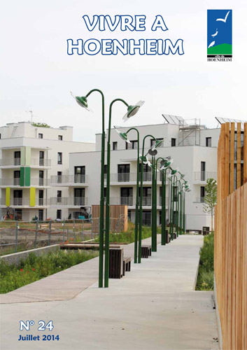

Au sommaire du journal paru en juillet : le vote des premiers investissements de la mandature, la tournée du ban communal des élus, la fête au multi-accueil « Les Champs fleuris », les frivolités de Nicole, la première boum des jeunes, la réunion des dentellières au centre socioculturel, des nouveautés dans les commerces …